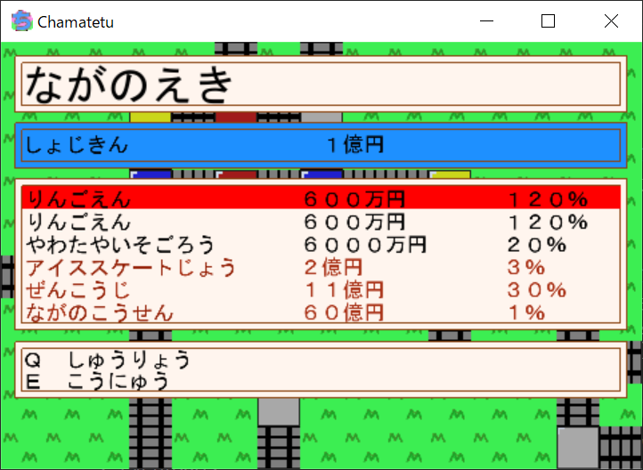
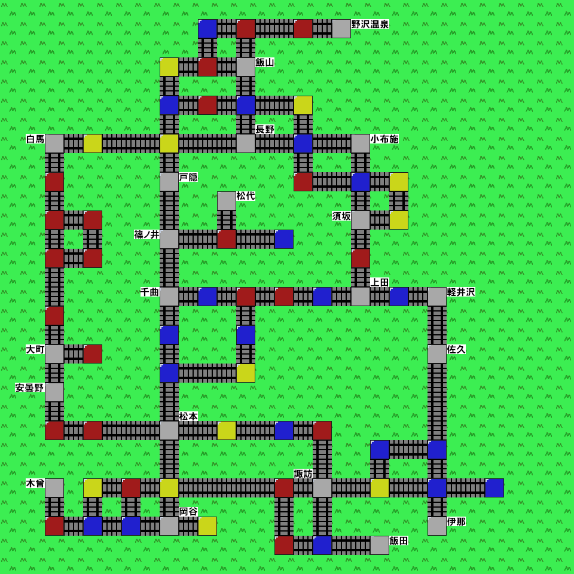

はじめに
ちゃま鉄をインストールしていただきありがとうございます! このHTMLは
ゲーム説明,仕様が書かれています.中にはカードの説明などネタバレを含むものがあります.お気を付けください.
目次
「ちゃま鉄」ってなに?
ゲームの用語説明
ゲームの進行
マップ
「ちゃま鉄」ってなに?
「ちゃま鉄」は,4J後期プログラミング演習の課題で作成したミニゲームです.「
桃太郎電鉄」
をイメージして作成しました.「ちゃま鉄」は鉄道会社の運営をイメージしたすごろくゲームです.ゲーム終了時に
資産が最も多い人が勝利です.本作は3年決戦で3人でのプレイを想定しています.なお,「貧乏神」は登場しません!
ご安心ください.
ゲームの用語説明
社長
プレイヤーのことです.プレイヤーはターン順に「プレイヤー1社長」,「プレイヤー2社長」,「プレイヤー3社長」
という名前がついています.また,分かりやすいように,「プレイヤー1社長」は「青」,「プレイヤー2社長」は「ピンク」,
「プレイヤー3社長」は「黄色」という色をつけています.
物件
停車した駅には,その地域の名産品や観光地といった「物件」を購入できる物件駅があります.物件名の横に表示されているのが物件の値段です.物件を購入することで,社長さんの資産が増えます.

決算
決算は毎年3月が終了すると行われます.決算では購入した物件の収益率に応じて社長さんにお金が配られます.
1つの駅のすべての物件を購入すると「独占」になり,決算での収益が2倍になります.
目的地駅
目的地になっている駅のことです.本作では,目的地駅に一番乗りした社長に3億円をあげる仕様になっています.
借金
マイナス駅に停車すると,借金を背負ってしまうことがあります.本作では物件をもっている場合,借金を自動で返済する
システムにしました.借金の返済の優先順位は次のようになっています.すべての物件を売却しても借金が残ってしまった
場合は所持金に借金が残ります.
独占でなく借金額より高い物件 > 独占でなく借金額より低い物件 > 独占で借金額より高い物件 > 独占で借金額より低い物件
ゲームの進行
ゲームの進行方法について説明します.プレイは「1年目4月」からのスタートです.ターンの順番は「プレイヤー1社長」,「プレイヤー2社長」,「プレイヤー3社長」
の順番になっています.3人のターンが終了すると1ヵ月が経過します.各社長は,自分のターンにサイコロをふるか,カードを使うかのどちらかができます.
サイコロをふった場合は,サイコロの出目に応じてマスを移動することができます.マス移動は「W」で上,「A」で左,「S」で下,「D」で右に移動できます.
駅に停車すると,駅の効果が発動します.
駅の見た目と効果には次のものがあります.
- 青いマス ... プラス駅です.お金が手に入ります.
- 赤いマス ... マイナス駅です.お金が減ります.
- 黄色いマス ... カードが1枚手に入ります.5枚カードを持っている場合は駅の効果を受けられません.
- 灰色のマス ... 物件駅です.物件を買うことができます.
カードの種類と効果は次の通りです.カードを駆使して優勝を目指しましょう.
- 急行カード ... サイコロが2個に増えます.
- 特急カード ... サイコロが3個に増えます.
- 新幹線カード ... サイコロが4個に増えます.
- サミットカード ... すべての社長を自分のマスに集めます.3分の2の確率で成功します.
- ぶっとびカード ... ランダムな物件駅に移動します.
- 10億円カード ... 10億円が手に入ります.
- 徳政令カード ... 借金を負っている社長の所持金が0円になります.
- 剛速球カード ... 他の社長のカードをすべて破壊します.2分の1の確率で成功します.
マップ
ゲームマップは次のようになっています.ゲーム内のマップでは,駅名が表示されない仕様になっています.
ゲームスタート時の駅は長野駅です.
